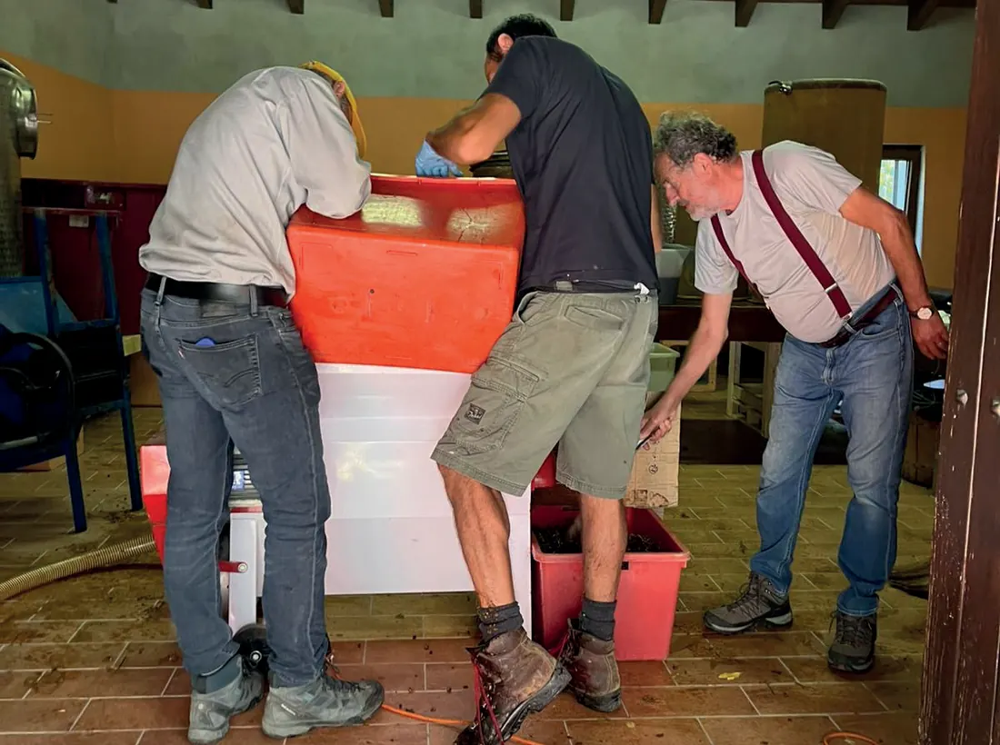
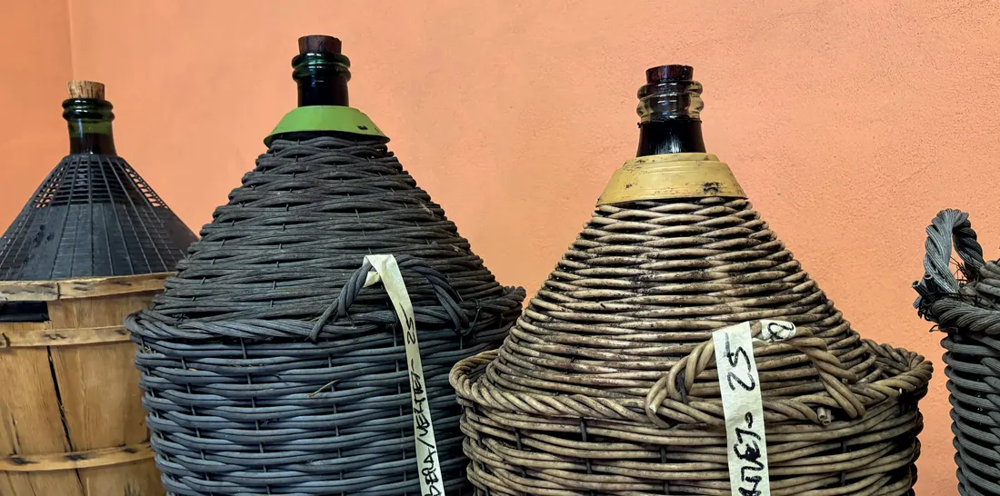
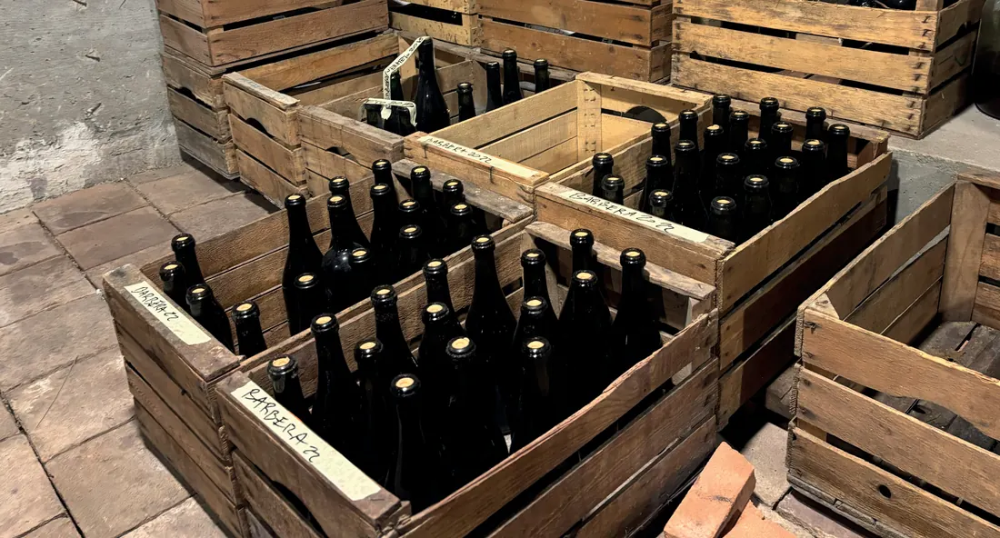

Cantina
Mano, tempo, misura.
Una piccola impresa agricola individuale, a conduzione familiare, dove la scala produttiva resta parte del valore.




Azienda Agricola Corrado Volpini
Una realtà nuova con radici profonde.
L’azienda nasce nel 2003 per allevamento e nel 2016 si espande nel settore vitivinicolo.
La cantina è oggi operativa e orientata a una crescita progressiva, mantenendo al centro sostenibilità, artigianalità, semplicità ed eleganza.